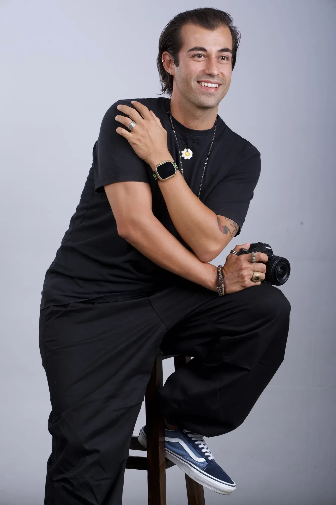
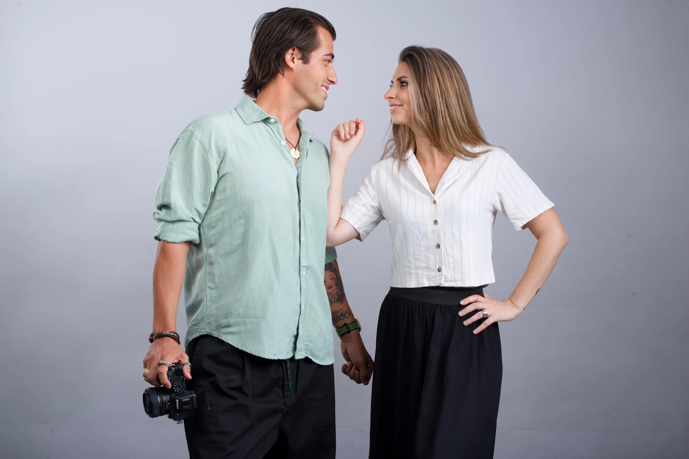

Victor is the photographer behind every shoot at The Gastro Lab. With years of experience working across restaurants, food brands, and digital content, he brings technical precision and a natural instinct for how food behaves in front of a camera — how it moves, how light hits it, and what it takes to make a dish look exactly as good as it tastes. His work has helped brands and bloggers across the food industry build a visual identity that doesn't just look good, but performs.
Debora brings over a decade of experience across hospitality management, food styling, and content strategy. She has worked alongside some of the finest fine dining operations in the world, developing a sharp eye for how food communicates — not just visually, but emotionally. Her background in recipe development and food styling means she understands what makes a dish translate on camera and feel achievable to a home cook at the same time.
Most recently she spent two years at Gronda, one of the leading platforms for culinary professionals, where she supported over 100 chefs and content creators in growing their personal brands and social media presence. That combination of hospitality depth, styling expertise, and digital strategy is what she brings to every project at The Gastro Lab.

Together, Victor and Debora created The Gastro Lab — a professional food photography studio built specifically for food bloggers and recipe websites. Every recipe that comes through gets cooked, tasted, and shot by people who genuinely care about food and understand what makes content perform.
From a single reshoot to a full content strategy, The Gastro Lab offers everything a food blog needs to grow — original recipe development, exclusive photography, video content, and custom packages built around your niche and budget. No generic stock aesthetics, no guesswork. Just intentional, high-quality visuals made to rank on Google, convert on Pinterest, and keep your audience coming back for more.